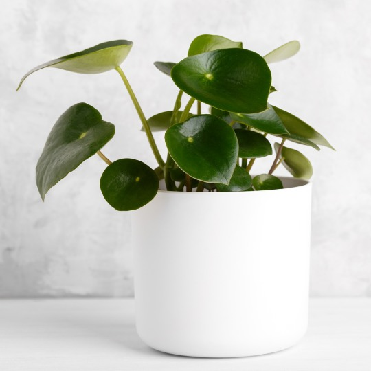

Fira julen med våra julstjärnor

Kom in och välj din julstjärna eller amaryllis. Vi har ett stort utbud av julblommor som sprider
värme och glädje i vintermörkret. Våra blommor kommer från de bästa leverantörerna, och vi erbjuder
både färska och vinterklara alternativ för ditt hem. Titta på vårt sortiment och välj den perfekta
julblomman för din inredning!
För mer information om våra julblommor, besök oss i butiken eller ring för mer info. Vi har öppet
hela december och erbjuder fri frakt på alla julbeställningar.
Nyårserbjudande på vinterblommor

Välkomna det nya året med våra vackra vinterrosor och hyacinter. Just nu får du 20% rabatt på utvalda
blommor! Dessa vinterblommor är perfekta för att sprida nyårslycka och ge ditt hem ett friskt och
fräscht intryck. Hyacinter är en klassiker som ger både färg och doft till din festdekoration.
Gå in på vår webbshop eller besök butiken för att ta del av erbjudandet. Rabatten gäller på alla
hyacinter och vinterrosor under hela januari!
Så tar du hand om dina blommor i vinter

Under vintermånaderna kan inomhusklimatet vara tufft för blommor. Här är våra bästa tips för att
hålla dina växter friska och blomstrande i den kalla årstiden:
- Placera blommorna borta från direkt värme (som element eller öppna fönster).
- Se till att inte övervattna, då luftfuktigheten ofta är högre inomhus på vintern.
- Ge växterna så mycket ljus som möjligt genom att sätta dem vid ett fönster.